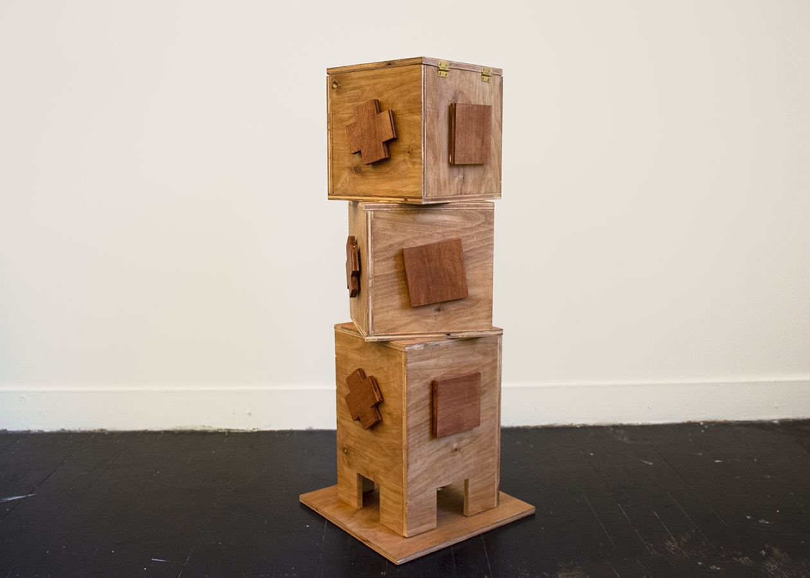
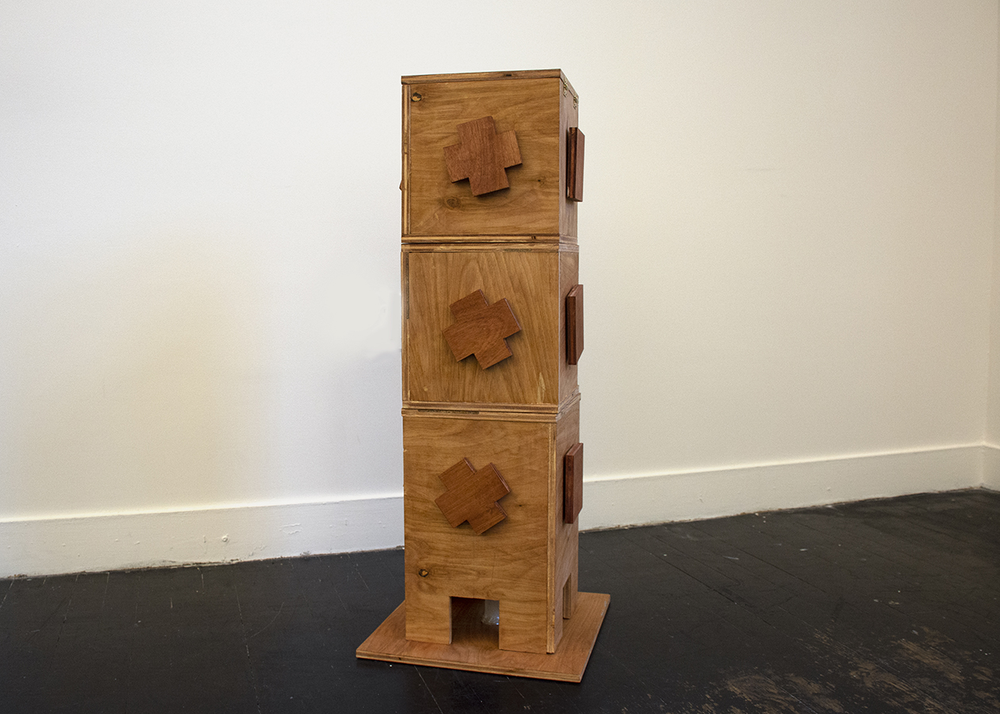
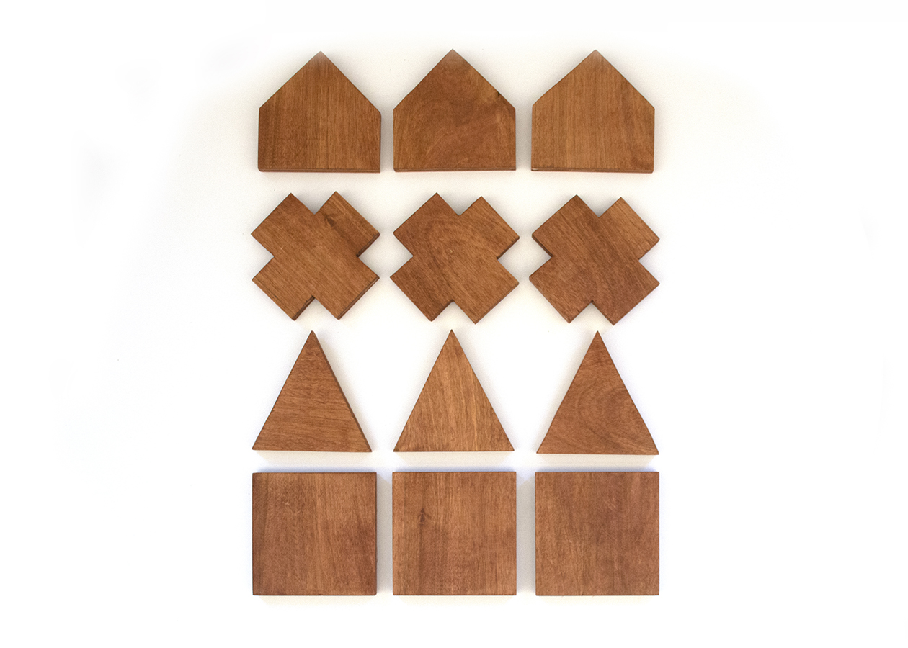
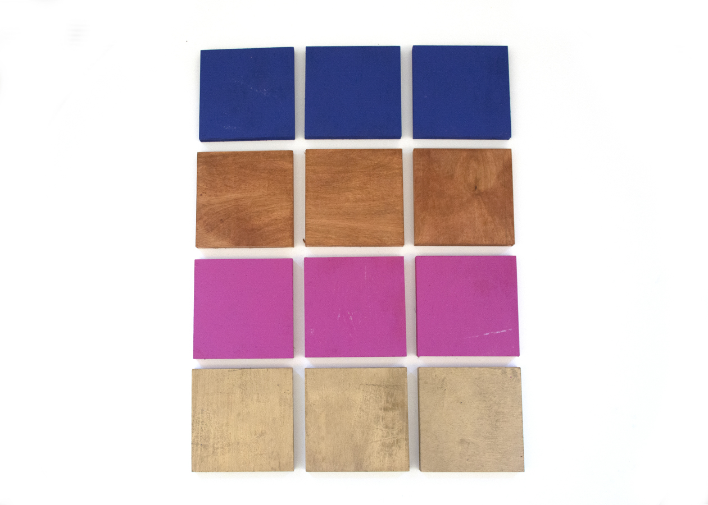
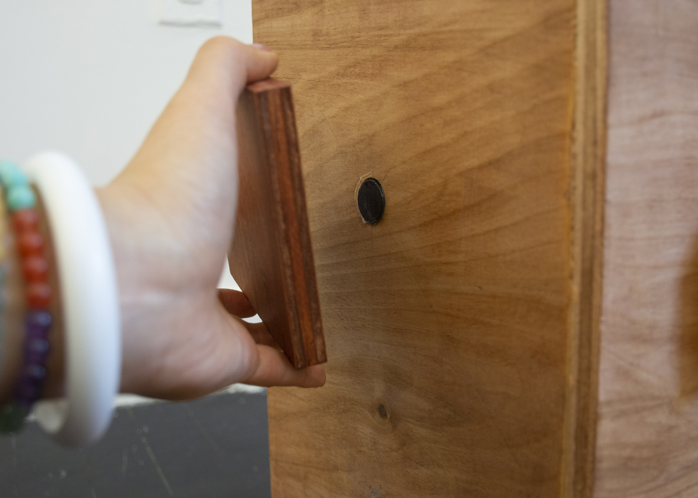
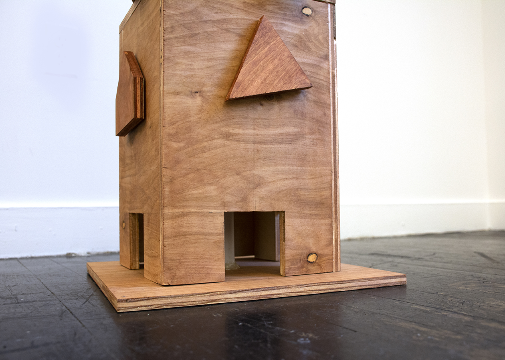

Twizzle
The Twizzle is designed for the bonobos to excersise their cognitive abilities with food as rewards. The bonobos will twist each box to align the exterior patterns. Once the correct match is made, the twizzle will dispense a treat. In addition, the exterior if the Twizzle is exchangable, as a modular design, the difficulty level can increase as the bonobos are getting familar with the pattern. Outside of a zoo setting, Twizzle can help researchers conduct experiment on bonobos cognitive abilities with shape, color and spacial resaoning. Twizzle is aim to bridge enrichment and research together by improving bonobo's welfare in capitivity.
Videos
Body Storming: Demostration on the Device
Confused human Playing Twizzle
Detailed Images
     Feedbacks
After My final presentation to my peers, teacher, and Animal experts I realized that there are still many thing I could improbe on Twizzle. On the Mechamisms, it would be better that the device can allow various sizes of food to be dispensed. At the moment based on the material I chose it can only take nuts and some berries. In addition, it would be better t9o nutralize the sharp angles and make the device in a clinder shape. As far as the structure goes, haveing a more solid base and seprate the third teir from the base would give it a more smooth turn and more stable support. In terms of interactions, it was suggested if the device can incorperate somewhat of tool-using activity such as use a tool to get the treat. I think all these advices and suggestions are extremely valuable and would love to further improv on this device in the future.